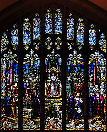

Biography

Short for Elena Lucrezia Cornaro Piscopia, Elena Cornaro was born in Venice Italy in 1646. She is known for being the first woman to receive a PhD. The Cornaro family was known for commissioning the creation of palaces, chapels, church art, villas, paintings, theaters and more; already making a mark in Venetian history.
Education
Elena Cornaro was an Italian scholar who studied mathematics, astronomy, philosophy, music and theology. She was fluent in 7 languages other than her native language and played many instruments including harpsichord, clavichord, harp, violin, and singer. At 19, she was widely known as the most learned woman in Italy. Some of the best scientists, clergymen and noblemen in Europe came to visit Cornaro. In 1669, at the age of 23 she translate "Dialogue between Christ our Redeemer and a Devoted Soul" from Spanish to Italian. The fame of this huge accomplishment spread and she was invited to join scholarly societies. In 1670, she became the president of the Venetian society Accademia dei Pacifici.In 1672, Carlo Rinaldini, and Felice Rotondi petitioned University of Padua to give Cornaro a doctoral degree in theology. The bishop of Padua assumed Cornaro was seeking a degree and supported her pursuit of degree, but after discovering she sought a degree in theology, he refused to grant her the degree because she was a woman. However in 1678, her defense was held in the cathedral of Padua which consisted of explaining two passages chosen at random from Aristotle. 
After earning all the necessary credits to receive her PhD in theology, a year after the famed debate, she was not allowed to graduate because the Roman Catholic Church did not think it was proper that a woman earn a degree in theology. Members at the university did not believe that was right, so they allowed her to receive a degree in philosophy instead of theology. She was awarded this degree at the age of 32 years.
Other works
In 1665, she became an oblate in the Benedictine order, and after receiving her degree, she furthered her studies and ministered to the poor. The extensive charitable work, rigorous penances and extreme dedication to her studies took a tool on her weak physical condition as she died in 1684.